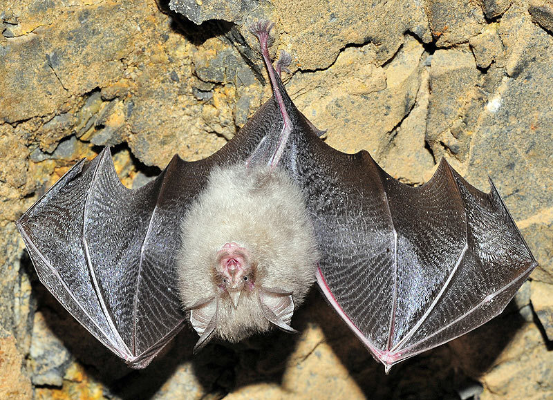
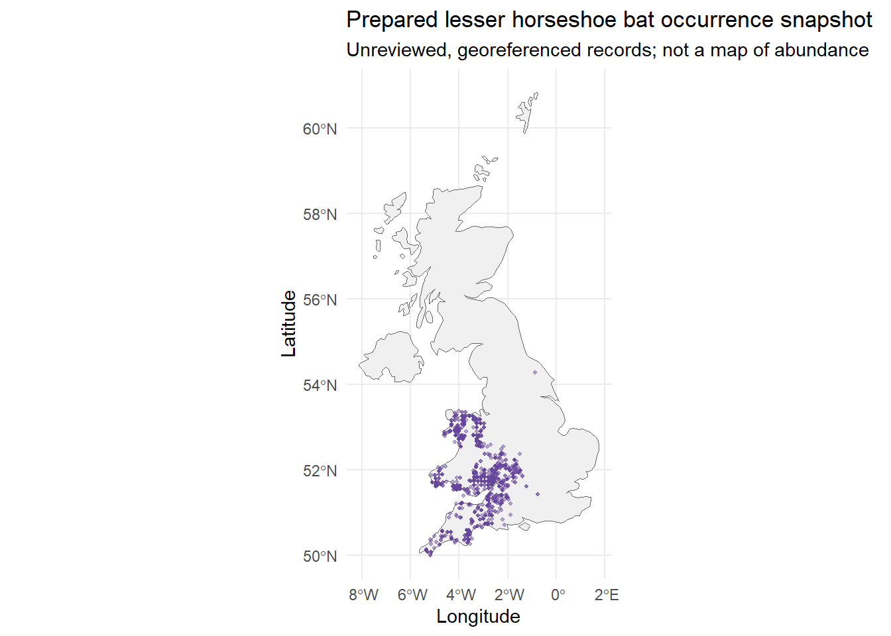

Occurrence records, data quality, and sampling bias
Why occurrence data matter for SDMs
A species distribution model (SDM) relates observations of a species to environmental conditions across a study region. The conclusions depend as much on where, when and how the species was recorded as on the modelling algorithm.
Species occurrence data can come from different sources, including systematic field surveys, museum collections, citizen-science projects and biodiversity databases such as GBIF. While these records provide valuable information, some observations—particularly those collected opportunistically through citizen science—may not follow a standardised sampling design and therefore require careful checks for identification accuracy, coordinate quality and spatial sampling bias. Before fitting a model, we must decide which records are relevant, check their spatial accuracy and recognise where surveying has been uneven.
This chapter uses the lesser horseshoe bat (Rhinolophus hipposideros) in the United Kingdom. You will learn with a prepared snapshot so that the practical works without querying live biodiversity services, while also seeing how to obtain the original records in R. Never assume that a point on a map proves that a species is absent elsewhere.

Rhinolophus hipposideros (source: faluke, via iNaturalist, photo 102259155)
TipLearning outcomes
By the end of the core practical, you should be able to distinguish occurrence, non-detection and background records; load and inspect georeferenced observations; map their distribution; flag potentially unreliable coordinates; and explain how sampling bias can affect SDMs.
Optional research extensions demonstrate live GBIF queries, spatial thinning, importing your own survey data and documenting source-data provenance.
Start in your RStudio project
Continue using the RStudio project and your own annotated .R script created a the start of this workshop homepage. Run the following setup code before the examples below. This is visible so you can reproduce the same workflow without relying on hidden objects (while the coding details are not relevant for learning SDMs).
library(sf)library(ggplot2)# Your student download should contain this prepared snapshot.stopifnot(file.exists("data/workshop_data.RData"))load("data/workshop_data.RData")# Verify the objects and essential fields used by this lesson.stopifnot(inherits(UK_sf, "sf"))stopifnot(exists("occ_df_rhinhipp"))stopifnot(all(c("decimalLongitude", "decimalLatitude") %in%names(occ_df_rhinhipp)))# A separate data frame keeps the original snapshot unchanged.occ_raw <-as.data.frame(occ_df_rhinhipp)nrow(occ_raw)
Inspect: What do nrow(), names() and head() tell you? Find any available fields recording the species name, observation date, record identifier or source dataset. Which would you retain for a reproducible analysis?
1. Species data: observations and non-detections
An SDM may draw on several kinds of evidence:
Presence-only records: the species was recorded at a location; there is often no corresponding information about where it was sought but not detected.
Detection/non-detection surveys: sites were surveyed using a defined method. A non-detection is not automatically proof of true absence, because detectability can be imperfect.
Verified absence information: absence can be supported by a carefully designed survey, but certainty depends on timing, effort and detection probability.
Abundance or count data: numbers recorded at sites or visits, interpreted in relation to survey effort and detectability.
Background or pseudo-absence samples: locations constructed for modelling rather than confirmed field observations of absence. These will be examined later in the workshop.
Important fields commonly include scientific name, longitude, latitude, observation date, observation basis, record ID, coordinate uncertainty and data source. Spatial coordinates alone are not enough to establish that records are fit for modelling.
NoteWhere can you obtain species records?
Examples include GBIF, iNaturalist, eBird, OBIS, published survey datasets and original field surveys. Movebank provides movement-tracking records, which require different handling from independent species-occurrence points.
These sources differ in sampling design, taxonomic verification, temporal coverage, coordinate uncertainty and reuse conditions. Records from multiple sources should not be combined without checking duplicates and provenance.
1.1 Optional research extension: obtain records from GBIF
The rgbif package allows you to check scientific names against a recognised taxonomy and retrieve georeferenced occurrence records from GBIF. The example below demonstrates how to access these data independently.
For research applications, occurrence records should be obtained through a documented and reproducible download. GBIF provides an occurrence search and download service that allows you to select records and obtain a persistent DOI for citing the downloaded dataset.
Apply appropriate filters, such as country (United Kingdom), records with coordinates, and any relevant observation dates or data-quality criteria.
Select Download, sign in to your GBIF account if required, and request the occurrence dataset.
Save the downloaded data together with its DOI, search criteria and download date.
Before using these records in an SDM, examine their identification accuracy, coordinate uncertainty, duplication and spatial sampling bias. Keep a record of any data-cleaning decisions and excluded observations.
library(rgbif)species_name <-"Rhinolophus hipposideros"# Resolve the name in the taxonomy used by rgbif.match <- rgbif::name_backbone(name = species_name,kingdom ="Animalia")# Examine the taxon match before sending a record query.match[, intersect(c("usageKey", "scientificName", "matchType", "rank"),names(match))]# Use the returned usageKey; do not assume a numeric speciesKey.stopifnot("usageKey"%in%names(match),!is.na(match$usageKey[1]))taxon_key <- match$usageKey[1]# A small exploratory search, not an exhaustive occurrence download.live_result <- rgbif::occ_search(taxonKey = taxon_key,country ="GB",hasCoordinate =TRUE,limit =300)occ_live <- live_result$datanrow(occ_live)head(occ_live[, intersect(c("species", "decimalLongitude","decimalLatitude", "eventDate"), names(occ_live))])
In rgbif 3.9.0 and later, the default taxonomic checklist changed from the GBIF Backbone to the Catalogue of Life Extended Release. Always inspect the match and document the checklist and package version rather than assuming taxon identifiers remain unchanged. See the rgbif migration guidance.
Change: For another species, modify species_name and inspect match before downloading. Consider adding a date filter. Compare: Why might the live result differ from the prepared workshop snapshot? A limit is a maximum returned by the search, not evidence of a complete or unbiased sample.
NoteData provenance and citation for research
For a thesis or publication, record the taxonomic checklist, query filters, date of retrieval, original dataset identifiers, licences and cleaning decisions. GBIF recommends DOI-assigned occurrence downloads (for example with rgbif::occ_download()) for citable research datasets; occ_search() by itself does not create a DOI for the result. See GBIF’s citation guidance and the optional Data Preparation chapter.
2. Inspect and map the prepared occurrence records
For the core practical, continue with occ_raw, not the optional occ_live object. First identify records with missing, non-numeric or impossible geographic coordinates. This is a basic plausibility check, not a complete cleaning procedure.
# Preserve the original fields; make the two coordinate columns numeric.occ_check <- occ_rawocc_check$decimalLongitude <-suppressWarnings(as.numeric(as.character(occ_check$decimalLongitude)))occ_check$decimalLatitude <-suppressWarnings(as.numeric(as.character(occ_check$decimalLatitude)))valid_coords <-with(occ_check,is.finite(decimalLongitude) &is.finite(decimalLatitude) & decimalLongitude >=-180& decimalLongitude <=180& decimalLatitude >=-90& decimalLatitude <=90)# A copy containing valid longitude/latitude pairs.occ_valid <- occ_check[valid_coords, , drop =FALSE]count_check <-data.frame(stage =c("Snapshot", "Valid geographic coordinates"),records =c(nrow(occ_check), nrow(occ_valid)))count_check
stage records
1 Snapshot 2000
2 Valid geographic coordinates 2000
stopifnot(nrow(occ_valid) >0)
A valid pair of longitude/latitude values can still be wrong: the coordinates might fall in the sea, refer to a museum, have been rounded, or be inconsistent with the species’ recorded locality.
2.1 Map the records in R
ggplot() +geom_sf(data = UK_sf, fill ="grey94", colour ="grey40") +geom_point(data = occ_valid,aes(x = decimalLongitude, y = decimalLatitude),colour ="#65449b", size =0.8, alpha =0.45) +coord_sf() +labs(title ="Prepared lesser horseshoe bat occurrence snapshot",subtitle ="Unreviewed, georeferenced records; not a map of abundance",x ="Longitude", y ="Latitude") +theme_minimal()

Inspect: Are the occurrences evenly distributed? Does a cluster prove that habitat is better in that area? Could survey effort, roads, local recording activity or repeated visits contribute to the pattern?
Research caution: The focal species may have sensitive roost locations. Check data-provider restrictions and relevant conservation guidance before distributing exact locations. The interactive web demonstration below uses an aggregated grid, not individual coordinates or precise roost metadata.
3. Assess record quality
Data cleaning should be traceable and scientifically justified. A flagged coordinate is a candidate for inspection, not automatically an invalid ecological observation. Keep the original snapshot unchanged so every exclusion can be reconsidered.
3.1 Detect repeat locations and check metadata
# Are records repeated at the same coordinates?# This is different from identical GBIF record IDs or repeated surveys.coordinate_pair <-paste(occ_valid$decimalLongitude, occ_valid$decimalLatitude, sep ="|")sum(duplicated(coordinate_pair))
[1] 1431
# Inspect a few potentially repeated locations.head(occ_valid[duplicated(coordinate_pair),c("decimalLongitude", "decimalLatitude"),drop =FALSE])
A repeated location may represent a duplicate import, a long-used roost or independent surveys at different times. Why would discarding every repeat without checking dates and record IDs be inappropriate?
3.2 Flag suspicious coordinates using CoordinateCleaner
Here we use CoordinateCleaner to flag several common problems, including duplicate coordinates within the same species, coordinates near country centroids, equal latitude/longitude values, coordinates near biodiversity institutions and the (0, 0) region. The checks are imperfect and some may flag genuine locations.
# This package is required for the core cleaning example.library(CoordinateCleaner)# The cleaning function requires a species field.if (!"species"%in%names(occ_valid)) { occ_valid$species <-"Rhinolophus hipposideros"}occ_valid$species <-as.character(occ_valid$species)occ_valid$species[is.na(occ_valid$species) |!nzchar(as.character(occ_valid$species))] <-"Rhinolophus hipposideros"# Keep flagging separate from deletion.occ_rhinhipp_flags <- CoordinateCleaner::clean_coordinates(x = occ_valid,lon ="decimalLongitude",lat ="decimalLatitude",species ="species",tests =c("centroids", "duplicates", "equal","gbif", "institutions", "zeros"),inst_rad =10000,value ="spatialvalid",verbose =FALSE)# TRUE: passed the selected tests; FALSE: review the record.flag_summary <-as.logical(occ_rhinhipp_flags$.summary)flag_summary[is.na(flag_summary)] <-FALSEsummary_table <-data.frame(result =c("Passed selected tests", "Flagged for review"),records =c(sum(flag_summary), sum(!flag_summary)))summary_table
result records
1 Passed selected tests 355
2 Flagged for review 1645
# Retain a working copy for subsequent exercises.occ_rhinhipp_cleaned <- occ_valid[flag_summary, , drop =FALSE]stopifnot(nrow(occ_rhinhipp_cleaned) >0)
Inspect: How many records were flagged? Which tests might remove legitimate observations? Should a 10 km institution radius make sense for this species and the underlying data sources? How might you report exclusions in a research paper?
NoteImportant limitations of automated cleaning
These tests do not prove species identification, absence of recording bias, suitability for the study period, or that coordinates correspond to the actual observation site. Check coordinate uncertainty, basisOfRecord, reported country, taxonomic status, occurrenceStatus, dates and relevant expert knowledge as part of a research-grade workflow. Review survey design before treating a non-detection as an absence.
The data used for later model fitting should be derived from a documented and consistently applied cleaning protocol. The automated flags shown here are an introductory exercise, not a universal filter.
3.3 Compare original and flagged records
For an interactive public map, we show counts per approximate 0.25-degree cell, rather than precise occurrence coordinates. These aggregated locations let you explore broad differences but are not appropriate for fine-scale habitat inference.
Interact: Turn each layer on and off. What patterns persist? Why might removing flagged points affect interpretation of the apparent distribution? Background map tiles require an internet connection; the static map above still illustrates the records if tiles are unavailable.
4. Spatial sampling bias and grain size
Opportunistic records tend to reflect where observers go and where observations are reported. Their density is therefore not simply an index of species abundance or environmental suitability. Spatial thinning can reduce repeated sampling within a grid cell, but it cannot reconstruct the unsampled landscape and may discard useful data.
4.1 Optional extension: one observation per raster cell
The following deterministic example selects one record per grid cell after randomising order. The random seed lets another student reproduce the same choices. The grid sizes are in degrees, not equal distances in kilometres; for serious analysis, a suitable projected CRS and ecologically justified scale are preferable.
Change: Increase the grain, change the random seed or select a different extent. Explain: Why can different grid sizes change the apparent spatial pattern? Why is the number of retained records not a direct measure of ecological suitability?
TipResearch connection: bias correction is more than thinning
Other approaches include explicitly modelling sampling effort, using a target-group background, spatially structured evaluation or developing a better sampling design. No universal correction is optimal for every occurrence dataset. Compare alternatives against the research question and document the rationale.
5. Optional extension: import your own field observations
You can also start from a field-survey table rather than GBIF. The example below assumes a file you provide yourself. It is not included in the student ZIP.
# Replace this filename with your own data file.field_data <-read.csv("data/my_field_records.csv")# Expected columns: decimalLongitude and decimalLatitude;# additional columns might include species, date, detection, effort.stopifnot(all(c("decimalLongitude", "decimalLatitude") %in%names(field_data)))field_points <- sf::st_as_sf( field_data,coords =c("decimalLongitude", "decimalLatitude"),crs =4326,remove =FALSE)plot(sf::st_geometry(field_points))
Verify that the coordinates are genuinely longitude/latitude in WGS84 before assigning crs = 4326. If your data use British National Grid or another projected CRS, specify that CRS and then transform the geometry when necessary. If the table includes non-detections, document the survey method and effort before interpreting these as absences.
6. Practise, interpret and extend
NoteCore practical
Inspect the prepared dataset. Identify longitude, latitude and any date or record-ID fields. Explain why these metadata are relevant for SDMs.
Compare the number of coordinate-valid records with the number passing the automated checks. Give at least two reasons why a flagged record might still be genuine.
Use the static map and interactive grid map. Identify one potential pattern in recording effort and explain why occurrence density alone is not a species-abundance map.
Research extension
Try the optional live rgbif search using a different species and record your filters, checklist, retrieval date and licence/citation requirements.
Explore spatial thinning with different cell sizes and explain the difference between spatial grain and survey effort.
Develop and defend a cleaning protocol that combines automated flags with metadata checks and ecological expertise.
Consider the implications of sensitive biodiversity locations for public maps and data sharing.